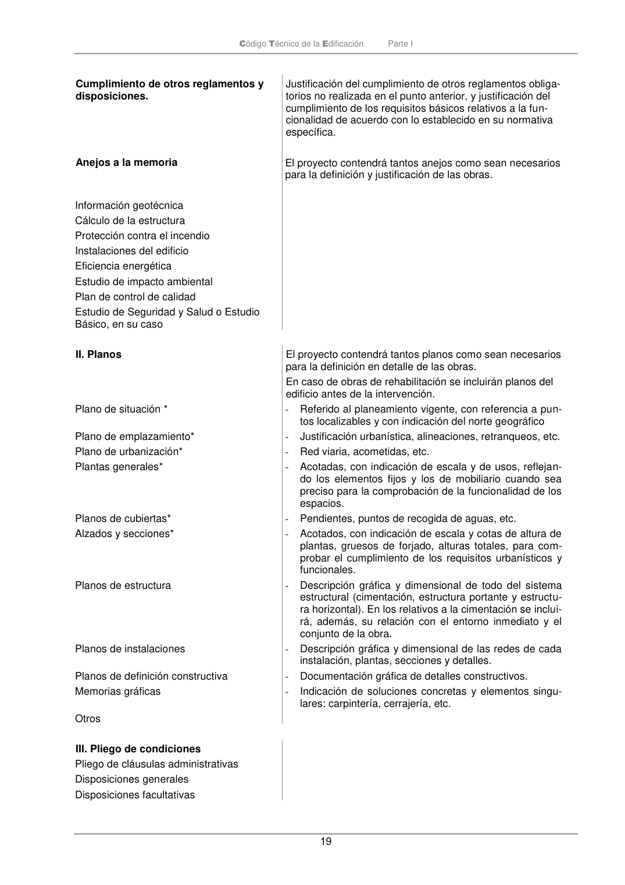

Parte I · edición 2022-06-14 · capa oficial
Documento PARTE-I-oficial · SHA-256 del PDF eaed39b98fbe715e9db817ab9bde93a5031c3d2c07440dd6a8653572b053a07f
Copia fiel del PDF fuente · Fuente oficial
Ficha de la disposición en la fuente oficial
Formatos: JSON del segmento · Markdown
3. Cumplimiento del CTE Justificación de las prestaciones del edificio por requisitos básicos y en relación con las exigencias básicas del CTE. La justificación se realizará para las soluciones adoptadas conforme a lo indicado en el CTE. También se justificarán las prestaciones del edificio que mejoren los niveles exigidos en el CTE. 3.1 Seguridad Estructural 3.2 Seguridad en caso de incendio* 3.3 Seguridad de utilización y accesibilidad 3.4 Salubridad 3.5 Protección contra el ruido 3.6 Ahorro de energía Código Técnico de la Edificación Parte I 19 Cumplimiento de otros reglamentos y
